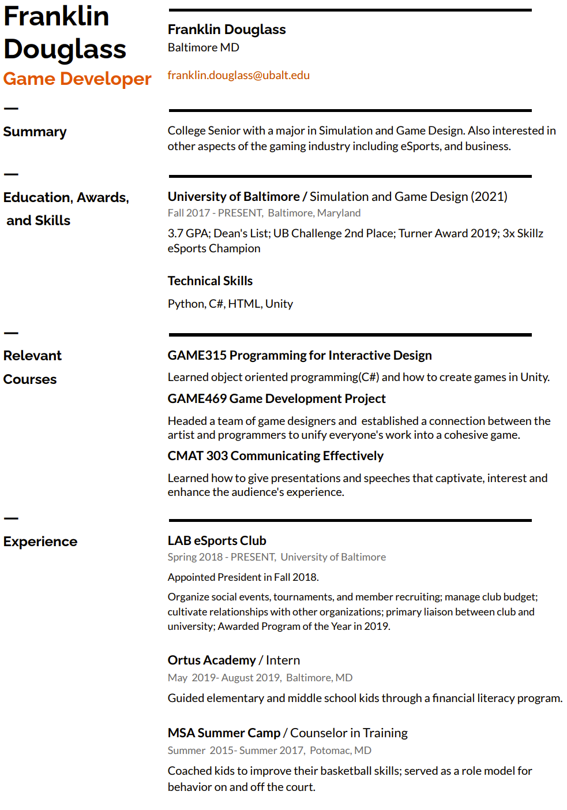

Quick Summary
Click my resume for a pdf version.
My Computer Science and Game Design classes have taught me how to create games in
Unity and how to code with C#, HTML & CSS, and Python.
I've gained experiences from running the LAB eSports Club.
Through the club I have learned many valuable skills such as how to
organize an event, budget, and collaborate with others.
I have a lot of experience working with kids which has taught me
patience and how to break information down into clear and concise terms
to help others understand.